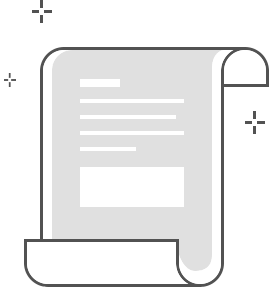

<!DOCTYPE html>
<html>
<head>
    <meta charset="utf-8">
    <meta name="viewport" content="width=device-width, initial-scale=1.0, maximum-scale=1.0, user-scalable=no">
    <meta http-equiv="X-UA-Compatible" content="IE=edge,chrome=1"> 
    <meta name="format-detection" content="telephone=no">
    <meta http-equiv="pragma" content="no-cache">
    <meta http-equiv="cache-control" content="no-cache">
    <meta http-equiv="expires" content="0">
    <title>我的收藏</title>
    <meta content='/favicon.ico' itemprop='image' property='og:image' />
    <link rel="stylesheet" href="assets/css/myCollection.css">
</head>
<body>
    <section class="max-w-750">
        <ul class="list-wrap" id="conList"></ul>
        <div id="listPage" class="hide"></div>
        <script id="conList-tmpl" type="text/x-dot-template">
            {{? it.status == 1020 }}
                <li class="empty">
                    <p>您还没有收藏文章</p>
                </li>
            {{??}}
                {{~it.data:value:index}}
                    <li class="view_{{=value.layout}}">
                        <h3><a href="kmb://recommend?url={{=value.url}}&id={{=value.article_id}}">{{=value.title}}</a></h3>
                        <div class="imgbox">
                            <a href="kmb://recommend?url={{=value.url}}&id={{=value.article_id}}">
                            {{ for (var i = 0; i < value.images.length; i++) { }}
                                    
                            {{ } }}
                            </a>
                        </div>
                        <div class="source">
                            <span>{{=value.added_time}}</span>
                        </div>
                        <i class="del" data-id="{{=value.article_id}}"></i>
                    </li>
                {{~}}
            {{?}}
        </script>
    </section>
    <script src="assets/scripts/seajs/sea.js" id="seajsnode"></script>
    <script>
        seajs.use("./assets/scripts/libs/pagelist", function(pagelist){
            pagelist.fun({ 
                url: 'api/v1/collectArticles',
                data:{page: 1, page_size: 20}
            },function(){
                var w_ = $('.view_3 .imgbox').width() * .3;
                $('.view_3 .imgbox').height(w_*148/226);
                console.log(w_)
            }, true);
            seajs.use('./assets/scripts/plugs/confirmTip.js',function(confirmTip){
                $('#conList').on('click', '.del', function(e){
                    e.preventDefault();
                    e.stopPropagation();
                    var that = $(this), id = that.data('id');
                    new confirmTip({
                        title: '<p style="padding: .2rem 0;">确定不再收藏这篇文章</p>'
                    },function(a){
                        if(a){
                            Ajax.custom({
                                url:'api/v1/collectArticles/delete/'+ id
                            },function(d){
                                if(d.status == 1000){
                                    Tools.alertDialog({
                                        text: "已取消收藏"
                                    });
                                    that.parent().remove();
                                }
                                if(d.status == 8006){
                                    Tools.alertDialog({
                                        text: "文章尚未被收藏"
                                    })
                                }
                            });
                        }
                    });
                })
            });
        })
    </script>
    <i id="lDom"></i>
</body>
</html>